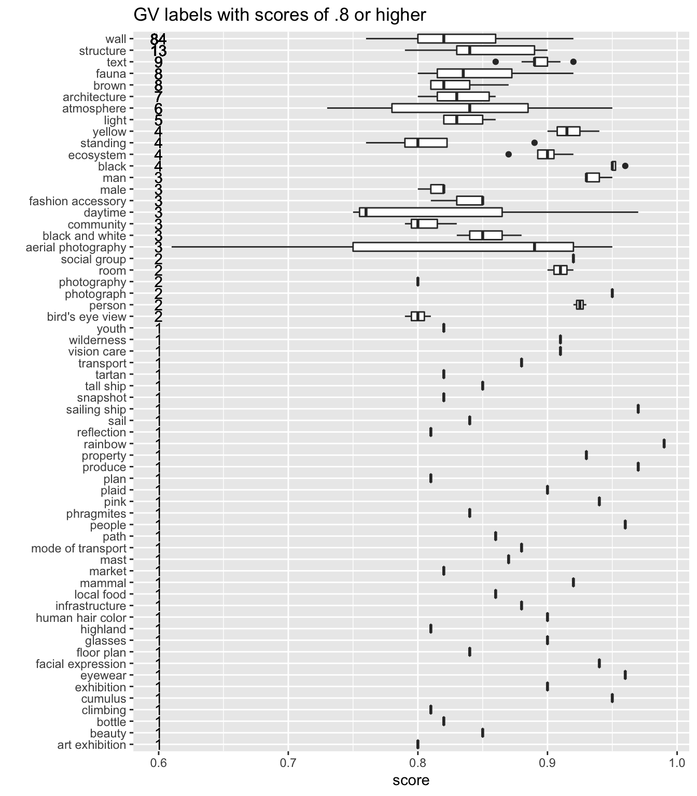

Chapter 1 Some generic introspection
Three types of results from Google Vision API:
labeldetect broad sets of objects basedentityuses Google Image Search to find topical entitiesocrfor Optical Character Recognition of text
entity and label receive a score as a measure for how confident Google is about this.
1.1 Frequency of labels
1.2 Distribution of probablity scores
Mean score overall: 0.6181846.
1.3 Top ranking labels
Number of lables with mean score of .8 or higher:
| type | n |
|---|---|
| entity | 26 |
| label | 62 |
1.4 Score distribution for those top ranking labels
NOTE: There can be labels that are only mentioned very rarely, but scored high. Ns added to the plots.

1.5 Most used labels (more than 50 times) and their mean scores
| type | value | N | mean_score |
|---|---|---|---|
| label | soil | 442 | 0.7854977 |
| label | geology | 438 | 0.7047945 |
| label | rock | 367 | 0.7064033 |
| entity | Soil | 360 | 0.5528611 |
| label | sand | 357 | 0.6711485 |
| entity | Archaeology | 327 | 0.7094190 |
| label | ancient history | 285 | 0.7209825 |
| entity | History | 284 | 0.4787324 |
| entity | Ancient history | 281 | 0.4510320 |
| label | archaeology | 278 | 0.6617626 |
| label | archaeological site | 241 | 0.7300830 |
| entity | Archaeological site | 237 | 0.6183544 |
| label | formation | 177 | 0.6158757 |
| label | history | 161 | 0.6526087 |
| entity | Geology | 144 | 0.6234028 |
| entity | Outcrop | 114 | 0.6414035 |
| label | outcrop | 114 | 0.5998246 |
| label | bedrock | 110 | 0.6481818 |
| label | ruins | 104 | 0.7242308 |
| label | landscape | 94 | 0.5571277 |
| entity | Wadi | 86 | 0.2995349 |
| label | wall | 84 | 0.8289286 |
| label | artifact | 63 | 0.7053968 |
| label | concrete | 61 | 0.5429508 |
| entity | 55 | 0.4000000 |
1.6 Highest scoring labels (over 0.8) and their frequency
| value | n |
|---|---|
| soil | 199 |
| archaeological site | 87 |
| ancient history | 86 |
| rock | 83 |
| wall | 59 |
| sand | 58 |
| geology | 43 |
| ruins | 39 |
| archaeology | 28 |
| artifact | 14 |
| structure | 11 |
| bedrock | 9 |
| history | 9 |
| sky | 9 |
| text | 9 |
| brown | 8 |
| architecture | 6 |
| fauna | 6 |
| historic site | 6 |
| stone carving | 6 |
| field | 5 |
| light | 5 |
| tree | 5 |
| atmosphere | 4 |
| badlands | 4 |
| black | 4 |
| ecosystem | 4 |
| vehicle | 4 |
| yellow | 4 |
| black and white | 3 |
| building | 3 |
| fashion accessory | 3 |
| font | 3 |
| girl | 3 |
| man | 3 |
| mineral | 3 |
| prairie | 3 |
| water | 3 |
| aerial photography | 2 |
| car | 2 |
| cliff dwelling | 2 |
| cloud | 2 |
| construction | 2 |
| darkness | 2 |
| fault | 2 |
| floor | 2 |
| grassland | 2 |
| male | 2 |
| outcrop | 2 |
| person | 2 |
| photograph | 2 |
| plain | 2 |
| plant | 2 |
| road | 2 |
| room | 2 |
| social group | 2 |
| vacation | 2 |
| beach | 1 |
| beam | 1 |
| beauty | 1 |
| bird’s eye view | 1 |
| bottle | 1 |
| cave | 1 |
| climbing | 1 |
| community | 1 |
| construction worker | 1 |
| cumulus | 1 |
| daylighting | 1 |
| daytime | 1 |
| exhibition | 1 |
| eyewear | 1 |
| facial expression | 1 |
| finger | 1 |
| floor plan | 1 |
| flooring | 1 |
| food | 1 |
| foundation | 1 |
| freezing | 1 |
| fun | 1 |
| geological phenomenon | 1 |
| glasses | 1 |
| grass | 1 |
| grass family | 1 |
| hand | 1 |
| headgear | 1 |
| highland | 1 |
| horizon | 1 |
| human hair color | 1 |
| infrastructure | 1 |
| local food | 1 |
| mammal | 1 |
| market | 1 |
| mast | 1 |
| meteorological phenomenon | 1 |
| mode of transport | 1 |
| morning | 1 |
| mortuary temple | 1 |
| night | 1 |
| orange | 1 |
| path | 1 |
| people | 1 |
| phragmites | 1 |
| pink | 1 |
| plaid | 1 |
| plan | 1 |
| plaster | 1 |
| produce | 1 |
| property | 1 |
| rainbow | 1 |
| reflection | 1 |
| relief | 1 |
| sail | 1 |
| sailing ship | 1 |
| senior citizen | 1 |
| sitting | 1 |
| smile | 1 |
| snapshot | 1 |
| snow | 1 |
| sport climbing | 1 |
| standing | 1 |
| tall ship | 1 |
| tartan | 1 |
| transport | 1 |
| vision care | 1 |
| wadi | 1 |
| wilderness | 1 |
| wood | 1 |
| youth | 1 |
| value | n |
|---|---|
| Archaeology | 155 |
| Çatalhöyük | 11 |
| Laborer | 4 |
| Car | 3 |
| Neolithic | 3 |
| Geology | 2 |
| Outcrop | 2 |
| Art | 1 |
| Art exhibition | 1 |
| Art museum | 1 |
| Boulder | 1 |
| Brigantine | 1 |
| Brooch | 1 |
| Earring | 1 |
| Escuela de Aviación Militar Airport | 1 |
| Facial hair | 1 |
| Floor | 1 |
| Floor plan | 1 |
| Free University of Berlin | 1 |
| Glass bottle | 1 |
| Gobustan National Park | 1 |
| Konya Archaeological Museum | 1 |
| Museum of Anatolian Civilizations | 1 |
| Paper | 1 |
| Plucked string instrument | 1 |
| Poster | 1 |
| Rear-view mirror | 1 |
| Sail | 1 |
| Sport climbing | 1 |
| Street | 1 |
| Sweet Grass | 1 |
| University of Kiel | 1 |
| Vegetable | 1 |